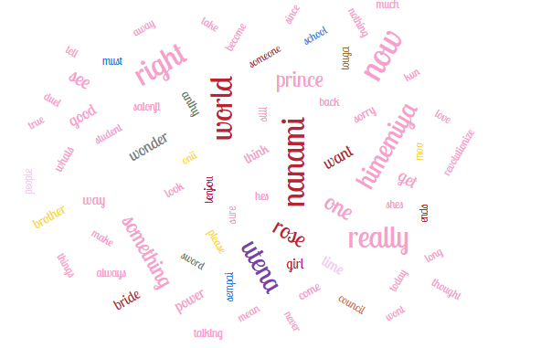
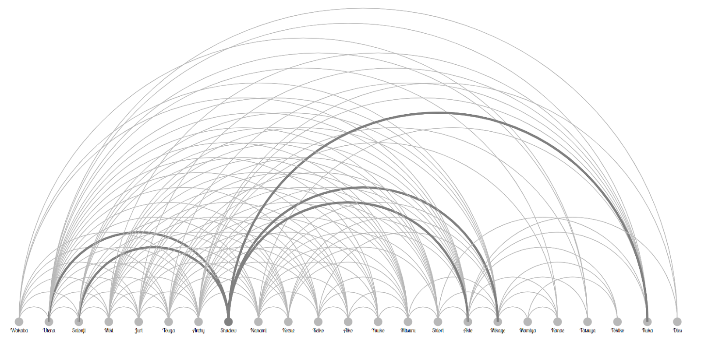
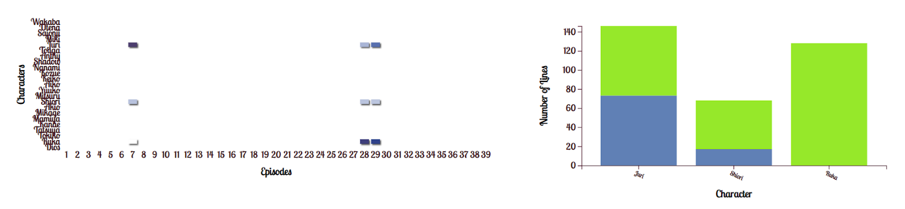

By Josh Zack, Rachel Lindquist, Nishidha Koneru, and Vivek Mehra
Revolutionary Girl Utena, or rgu, is a series where everything is done with a purpose. If two characters are talking to each other, it’s important. If a phrase is repeated over and over again it’s important. As such, rgu, is a good candidate for this project as seeing repeating phrases or character interactions may help users more understand the series as a whole. As such, looking at repeated words, phrases and character interactions are helpful to understanding the series as a whole. Main characters also have colors associated with them, making design much easier as character colors can be used for visualizations and will be familiar to fans.
Scripts pulled from: https://ohtori.nu/scripts/
Since it is a fan-run site, I didn’t want to make too many requests. As such I used 2 python files to pull the data. The first grabbed the data for each script so that it was stored on my computer and the second actually cleaned the data. This way I only needed to access the site 39 times, 1 for each episode, while I tried to figure out how to deal with cleaning the data.
The python code used for pulling the data is here: https://github.com/RachelLindquist/DataVisProject3/blob/main/pythonWebscraping/scrape.py
The python code for cleaning the data is here: https://github.com/RachelLindquist/DataVisProject3/blob/main/pythonWebscraping/uglyClean.py
Due to formatting changes, episode 17 and episode 18 had to be done separately.
The scripts are a translation of the original Japanese, as such there are some translation changes between characters' dialogue. The normalization of common phrases and fixing names, such as changing Micky to Miki, was done manually in Excel.
Compare: https://ohtori.nu/scripts/Episode_07.htm to https://ohtori.nu/scripts/Episode_01.htm to see instances of character names changing in terms of romanization
The first visualization component is a heat map that shows how much each character speaks throughout the show. The X axis displays all of the episodes and the Y axis displays all of the characters, and the shade of each block represents how much each character speaks in that episode: the darker the shade of the block, the more the character speaks in that episode. There is a tool tip that allows users to see the number of words spoken by each character in the episode when they hover over a specific block. Users can click on the characters’ names or the episodes to filter the data being displayed.
The second visualization component displayed is a stacked bar chart that shows how many lines were spoken by each character in each arc of the show. The X axis displays all of the characters and the Y axis displays the number of lines spoken, and the colors represent each arc of the show. If you click any of the colored bars, all of the visualization components adjust to display data for the selected arc.
The third visualization component is a multi line chart that displays the words spoken by each character. The X axis displays all the episodes and the Y axis displays the total number of words, and the color of each line represents each character. The line chart adjusts according to the data selected in the stacked bar chart. The search bar allows users to enter specific words and see which character says them and how many times.
The next visualization components are the two word clouds. The word cloud on the left showcases the most spoken words in the series. These are sized by how often the word is spoken and colored by who speaks the word the most. There is a minimum size so that words continue to be readable even after filtering. The word cloud on the right is similar but focuses on full character lines, looking for the most repeating lines. These tend to be short lines like “Yes.” or important repeated phrases like “For the sake of revolutionizing the world!”
The final visualization component is an arc diagram that showcases character interactions. Using the character colors, a line connects between characters that have lines in the same scene together. Hovering over a character’s circle in the arc diagram highlights that character and their interactions, making it easier to look at a single character.

Anthy, purple, is a main character, however she doesn’t speak much, often showing up in scenes but staying quiet. However, if we look at the word cloud, she has 1 word she says more than any of the other characters, is Utena, the name of her girlfriend. Meanwhile, Touga, red, as the character meant to represent misogyny in the series, is the one to most refer to Anthy as the “rose bride” and it is therefore not surprising that he says “bride” the most in the series.

The shadows are not real characters, implied to be narrators and often understood as a version of the Greek chorus. They show up on a backdrop as shadows and discuss what has happened in the episode, though in a vague and joking manner. Rarely do they ever interact with characters. Using the arc diagram, however, it is possible to see who they decide to interact with, leaving it up to the user to determine why. Perhaps they talk with Utena because she’s the main character and Akio because he’s the main villain. Maybe they are simply ghosts or failed duelists, and their ability to talk with Ruka and Mikage, who are both dead, is showcasing that.

Finally our code allows us to look at character relationships. Juri has an unrequited crush on Shiori who has yet to realize she is a lesbian. Shirori, to avoid her feelings and act like she’s straight, has decided to ignore Juri and focus on Ruka, their childhood friend. However, in Juri’s introductory episode, 7, it is easy to check that Ruka doesn’t appear at all even while Shiori does, showcasing that Ruka isn’t as important as Shiori later makes him out to be in episodes 28 and 29.
The project code was structured in a tree-like structure with the core html code index.html living in the root path and individual folders as follows:
The bulleted files above create classes for each visualization, and the classes are instantiated in main.js before passing the filtered data to the instantiated objects to visualize.
All of the visualizations use the d3 library. Additionally, the arc graph also uses the d3-cloud library. Spectre css library has been used for layout and styling of the page.
The data processing was performed separately as explained in the Data section. The cleaned raw data file was placed in the data/ folder. The individual visualizations were coded and tested separately by different team members as listed in the Division of labor section. A github repo was created to manage the project development, which all members had write access to. In order to run the code, one only needs to check out the repo code and run an appropriate web server. Since this is not a demanding web application, typically, the python webserver was used, it can be invoked from the root directory using the command line:
python3 -m http.server
Once the web server goes live. the application can be accessed using the url localhost:
After coding the individual visualizations, they were arranged in a grid based layout using spectre css library (which internally uses flexbox grid based techniques).
Interactive filtering feature was added to the heatmap and the stacked bar chart as described in the Visualization components section. Filtering can be done either individually on either chart or can be done in combination where data filtered by the heatmap filter action is further filtered by the bar chart filter action. Also, all visualizations are updated to show the final filtered data. Filtering code was added to main.js, where any filter action on either heatmap or barchart filters out the source dataset and then the filtered dataset is fed to all visualizations objects before calling updateVis() method to update the rendering.
The project code and the live application can be accessed through the following url's: